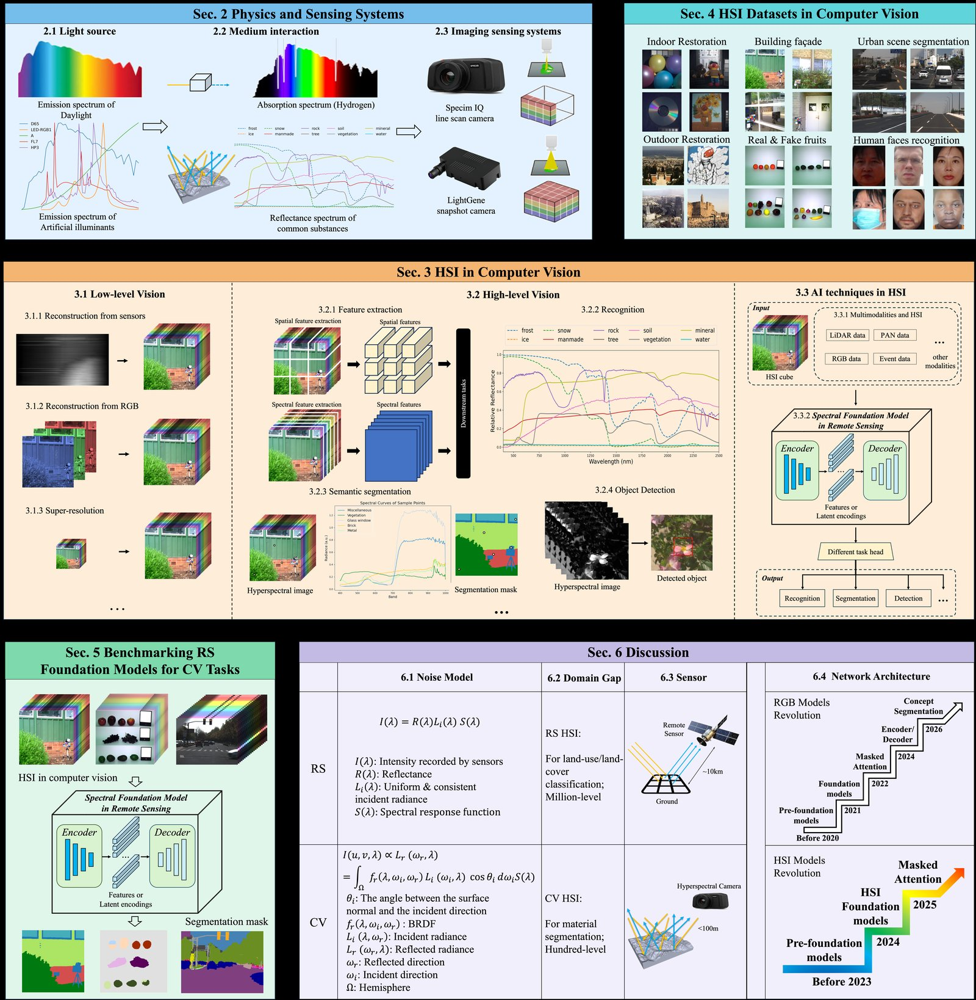
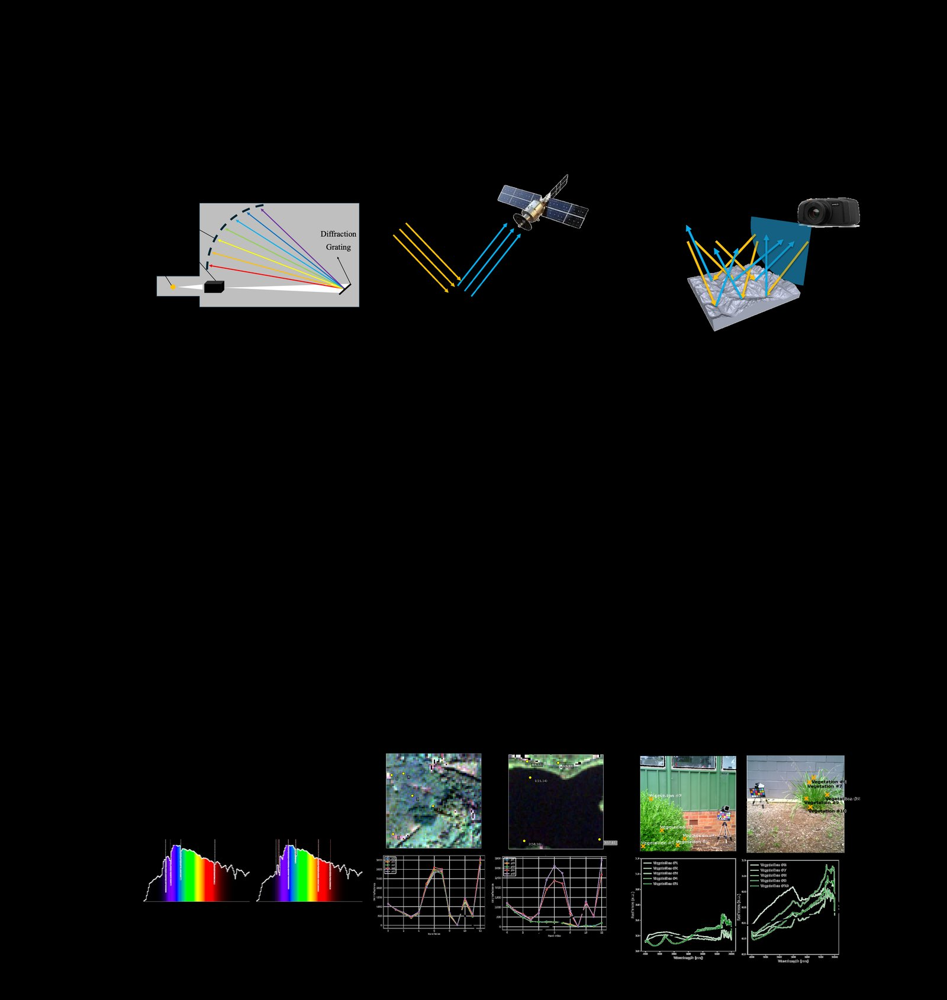
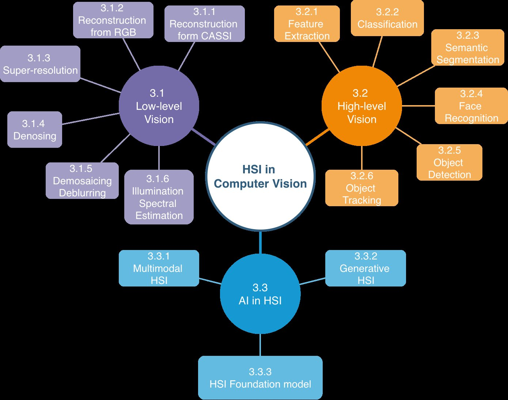
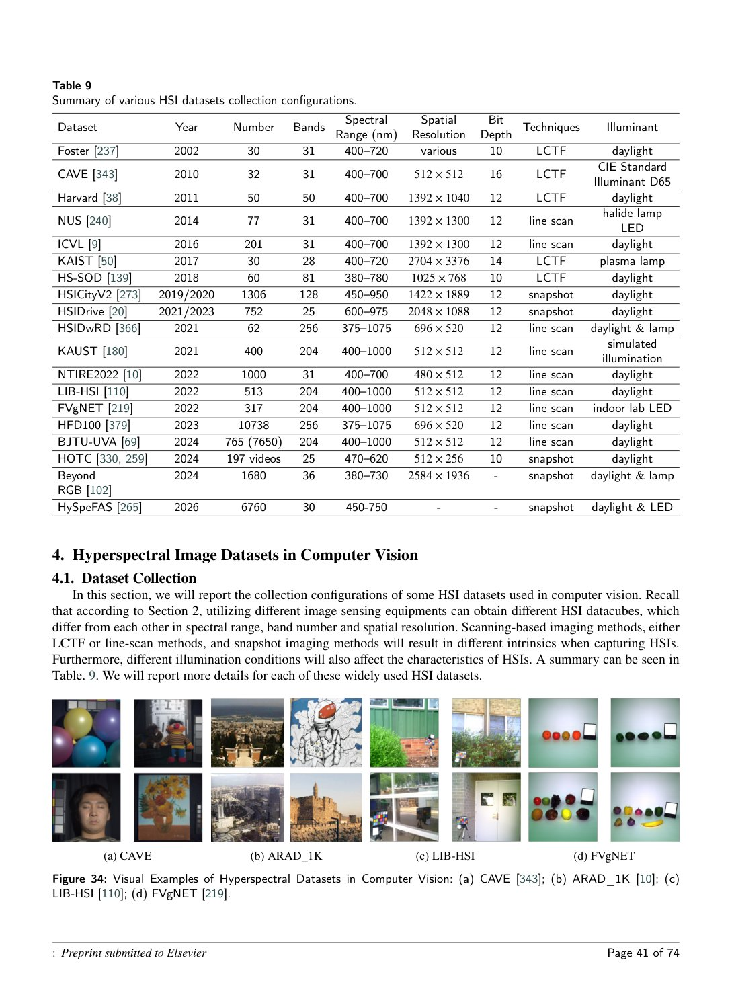
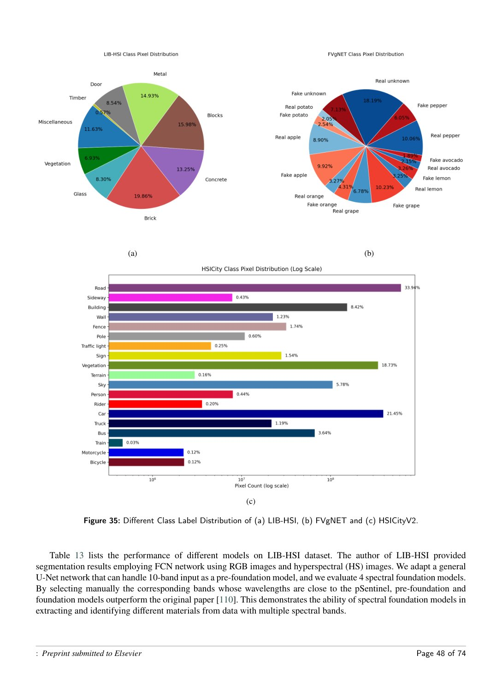
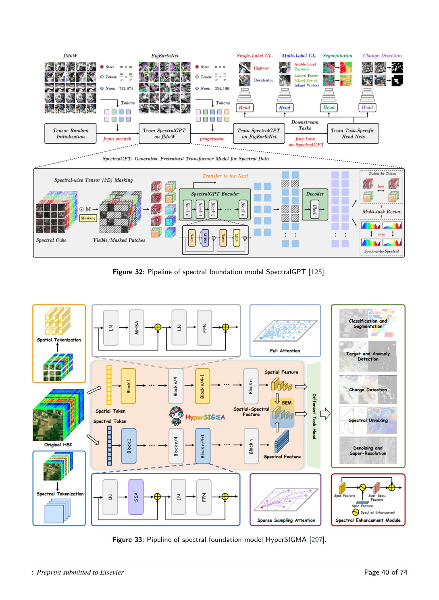

First HSI survey from a CV perspective
Builds a coherent pipeline from optical image formation to computer vision tasks, rather than treating HSI only as remote sensing data.
Survey Companion Website
From physical optical imaging and sensing systems to low-level restoration, high-level recognition, datasets, spectral foundation models, and the domain gap between remote sensing and computer vision.

Abstract
Hyperspectral imaging captures rich spectral information beyond conventional RGB images, enabling detailed analysis of material properties and offering significant potential for computer vision. Existing research, however, predominantly focuses on remote sensing or isolated tasks, and the fundamental differences between remote sensing HSI and computer vision HSI remain underexplored.
This survey establishes a unified pipeline connecting physical imaging theory, dataset characteristics, and downstream vision tasks. It organizes literature into low-level vision, high-level vision, and visual AI; reviews commonly used computer-vision HSI datasets; benchmarks remote-sensing spectral foundation models on representative CV datasets; and discusses challenges from theory, data, and applications.
Highlights
The page turns the manuscript into a project-style resource: abstract, contributions, taxonomy, datasets, benchmark tables, figures, and a searchable literature/resource database.
Builds a coherent pipeline from optical image formation to computer vision tasks, rather than treating HSI only as remote sensing data.
Discusses illumination, materials, sensors, scene geometry, network architectures, and dataset characteristics across remote sensing and close-range vision.
Evaluates spectral foundation models on LIB-HSI, FVgNET, and HSICityV2, showing domain gaps and transfer limitations.
Highlights the generation gap between modern RGB foundation models and current hyperspectral foundation models.
Physics & Sensing
The survey models HSI as a chain: light source → light-matter interaction → sensing optics → spectral response → HSI data cube.

Different settings for spectroscopy, remote sensing, and computer vision. CV HSI is harder because illumination, scene geometry, and sensor noise are more variable.
Imaging Systems
Flexible and precise, but slow. Common in chemistry, biomedical diagnosis, and remote sensing.
Pushbroom acquisition balances spectral and temporal resolution; widely used in industrial inspection and CV datasets.
Area scanning with LCTF/AOTF filters is straightforward but costly and temporally limited.
Captures spectral information in one shot, but often requires computationally heavy reconstruction.
Taxonomy
The survey groups HSI-CV work into low-level vision, high-level vision, and AI techniques.

Taxonomy of HSI in computer vision used in the paper.
Datasets
Summary adapted from the dataset collection table in the manuscript.

Examples and collection configurations of representative HSI datasets.
| Dataset | Year | Number | Bands | Range | Resolution | Technique | Illuminant |
|---|---|---|---|---|---|---|---|
| Foster | 2002 | 30 | 31 | 400-720 nm | various | LCTF | daylight |
| CAVE | 2010 | 32 | 31 | 400-700 nm | 512 × 512 | LCTF | CIE D65 |
| Harvard | 2011 | 50 | 50 | 400-700 nm | 1392 × 1040 | LCTF | daylight |
| NUS | 2014 | 77 | 31 | 400-700 nm | 1392 × 1300 | line scan | halide lamp / LED |
| ICVL | 2016 | 201 | 31 | 400-700 nm | 1392 × 1300 | line scan | daylight |
| KAIST | 2017 | 30 | 28 | 400-720 nm | 2704 × 3376 | LCTF | plasma lamp |
| HS-SOD | 2018 | 60 | 81 | 380-780 nm | 1025 × 768 | LCTF | daylight |
| HSICityV2 | 2019/2020 | 1306 | 128 | 450-950 nm | 1422 × 1889 | snapshot | daylight |
| HSIDrive | 2021/2023 | 752 | 25 | 600-975 nm | 2048 × 1088 | snapshot | daylight |
| HSIDwRD | 2021 | 62 | 256 | 375-1075 nm | 696 × 520 | line scan | daylight & lamp |
| KAUST | 2021 | 400 | 204 | 400-1000 nm | 512 × 512 | line scan | simulated illumination |
| NTIRE2022 / ARAD1K | 2022 | 1000 | 31 | 400-700 nm | 480 × 512 | line scan | daylight |
| LIB-HSI | 2022 | 513 | 204 | 400-1000 nm | 512 × 512 | line scan | daylight |
| FVgNET | 2022 | 317 | 204 | 400-1000 nm | 512 × 512 | line scan | indoor lab LED |
| HFD100 | 2023 | 10738 | 256 | 375-1075 nm | 696 × 520 | line scan | daylight |
| BJTU-UVA | 2024 | 765 / 7650 | 204 | 400-1000 nm | 512 × 512 | line scan | daylight |
| HOTC | 2024 | 197 videos | 25 | 470-620 nm | 512 × 256 | snapshot | daylight |
| Beyond RGB | 2024 | 1680 | 36 | 380-730 nm | 2584 × 1936 | snapshot | daylight & lamp |
| HySpeFAS | 2026 | 6760 | 30 | 450-750 nm | - | snapshot | daylight & LED |
Benchmarking Foundation Models
The survey evaluates SpectralGPT and HyperSIGMA variants on semantic segmentation datasets with OA and mIoU.
SpectralGPT+ after fine-tuning. Off-the-shelf foundation models perform poorly without task adaptation.
SpectralGPT+ shows the strongest 17-class segmentation performance among evaluated foundation models.
Urban scenes remain difficult; fine-grained classes and class imbalance limit transferability.

Class imbalance analysis for LIB-HSI, FVgNET, and HSICityV2.
| Dataset | Setting | SpectralGPT OA / mIoU | SpectralGPT+ OA / mIoU | SpatSIGMA OA / mIoU | HyperSIGMA OA / mIoU |
|---|---|---|---|---|---|
| LIB-HSI | Off-the-shelf | 4.7 / 1.0 | 11.6 / 2.7 | 13.2 / 1.5 | 10.6 / 1.2 |
| LIB-HSI | Fine-tuned | 88.7 / 75.3 | 90.0 / 77.9 | 85.8 / 70.0 | 85.3 / 69.0 |
| FVgNET | Off-the-shelf | 2.3 / 0.1 | 1.6 / 0.6 | 0.0 / 0.0 | 3.3 / 0.5 |
| FVgNET | Fine-tuned | 96.2 / 78.3 | 97.6 / 84.9 | 96.7 / 78.5 | 96.7 / 78.0 |
| HSICityV2 | U-Net | SpectralGPT | SpectralGPT+ | SpatSIGMA | HyperSIGMA |
|---|---|---|---|---|---|
| pSentinel mIoU | 32.5 | 39.1 | 42.4 | 33.4 | 34.0 |
| PCA mIoU | 33.1 | 34.2 | 37.4 | 28.2 | 28.3 |

Representative spectral foundation models discussed in the survey.
Discussion
Natural-scene HSI is affected by local illumination, geometry, reflection, transmission, and sensor acquisition.
RS labels are often coarse land-use classes; CV tasks require finer material and object understanding.
Datasets differ greatly in spectral range, band number, spatial resolution, technique, bit depth, and illuminant.
HSI networks still lag behind RGB foundation models in scale, data, and task generality.
Large-scale natural-scene HSI datasets are still limited compared with both RGB CV and remote sensing.
Robust deployment requires better calibration, uncertainty modeling, and benchmark protocols.
Reference Link Database
Filter the extracted manuscript references by category, year, venue, dataset, method, or keyword. The full exported bibliography is also available at data/references.csv.
| Year | Title | Venue | Category | Task / Dataset | Links |
|---|
Tip: verified code/dataset links are direct links; unverified entries include Scholar, Semantic Scholar, Papers With Code, and GitHub search links for follow-up curation.
Statistics
Citation
@article{li2026hsi_cv_survey,
title = {A Comprehensive Survey on Hyperspectral Imaging in Computer Vision},
author = {Li, Jincheng and Bi, Qi and You, Shaodi and Gevers, Theo},
journal = {Pattern Recognition},
year = {2026},
note = {Preprint / survey companion website}
}